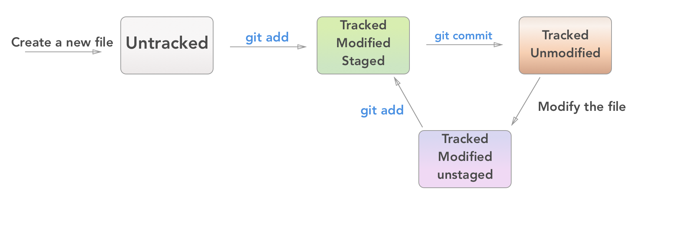
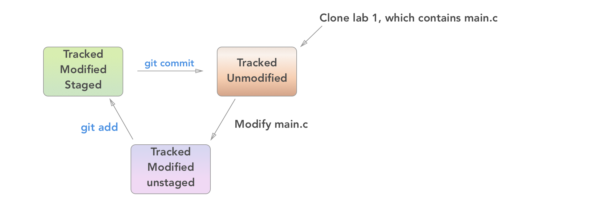

Git
For this part of the recitation, we will follow Jae's "git-tutorial" which can be found on the mailing list and the course website. Here's a quick run through of the operations reviewed in the tutorial, along with some bonus operations.
Git is version control software, where version control is "a system that records changes to a file or set of files over time so that you can recall specific versions later" (source). In other words, if you mess up your code really badly, you can use git to gracefully step back to an earlier version. To facilitate this, git needs you to take periodic snapshots of your code, called 'commits' in git parlance.
In this class, we require that you make git commits to get full credit for your work. We want you to learn git because in industry, you will without a doubt be using version control.
Version Control
A Version Control System (VCS) records changes made to a set of files. This allows programmers to maintain backups of their previous work without manually copying their files
Configuration
You need to set your name and email so that your commits are associated with your identity:
git config --global user.name "Your Full Name"
git config --global user.email your_uni@columbia.edu
It's also nice to enable color in your console when using git:
git config --global --add color.ui auto
And set your editor globally (here vim, if you prefer emacs use that). Note that
using the graphical version, gvim, is trickier, so we recommend you stick
to the command line version.
echo "EDITOR=vim" >> ~/.bashrc
Getting Started
In order to version control a directory, you have to 'initialize' it:
git init
But in this class, we won't be using git init. Instead, all students start by
making an exact copy of Jae's skeleton code. Git supports 'cloning', which does just
that:
git clone [source_directory] [destination_directory]
With the above command, you can take Jae's files and create your own copy. Neat!
Updating Your Versioning
Not all the files in a version controlled directory have to be under version control. You have to explicitly tell git to watch for changes in certain files. For information on which files are version controled, which have changed, etc. run:
git status
This will bring up file statuses. Remember that 'commiting' is equivalent to taking a snapshot at that time.
There are 4 file statuses:
- Untracked: git is not watching for changes in this file.
- Tracked, unmodified: git is watching this file for changes, but nothing has changed.
- Tracked, modified, unstaged: git is watching this file and it has changed, but you haven't told git you want to include the file in your next commit.
- Tracked, modified, staged: git is ready to commit the changes you've made.
To move a file from status 3 to 4 (i.e. to ensure that the next commit you make registers
the changes you made to a file), you have to 'stage' it using the add command:
git add file1 file2
git add -p # individually pick for each set of changes whether to stage it
Once you have at least one file that is modified and staged, you can commit:
git commit -m "some message" # explain what changes you made between now and your previous commit
Other Very Useful Commands
Checking up on your changes:
git status
git diff
git diff file1
git diff --cached
git log
git log --stat --summary
git log -p
To only stage changes (including deletions) to already tracked files, without adding untracked files:
git add -u
To remove a file from your git files, run:
git rm file1
To change a filename in git:
git mv oldfilename newfilename
Undoing changes:
git checkout -- [filename]
git reset HEAD [filename]
Going back in time:
git checkout <commit hash>
Examples
Case 1: Adding a new file

Case 2: Working on an existing file from git repository

Other Tools
git grep [pattern]
git help
git help commit
man git
man gittutorial
Patches are rarely necessary, but the submit script for this class uses them.
git format-patch --stdout origin > mywork.mbox
git am path/to/mywork.mbox
Remotes:
git remote add
git pull
git fetch && git merge
git push
gitignore
Git wants to track everything, but you don't want it to track everything. In
particular you want to ignore all your object (.o) files, and your compiled
executables. You can tell git to ignore certain files by using a gitignore file.
It's a list of file names (including wildcards [when you use an asterisk])
for git to ignore when running commands like status.
In your repository create a file named .gitignore, where each line is a
pattern of filenames git should ignore.
Example .gitignore file:
a.out
*.o
*.a
main
*.mbox
/labN-2015*
You can add the .gitignore file itself to the .gitignore, or you can add it
to the repository. You may also create a global ignore file so you don't have to
copy it to each repository. More details about that are in Github's help on
ignoring files.
Bonus
All of these recitation notes are tracked using git and hosted on GitHub. If we have time we'll come back to this during recitation, but here's some GitHub 101.
-
Create an account by going to github.com and signing up. Then, configure git for use with remote servers.
-
Add your SSH keys to github. They have a handy tutorial to help out. All you should need to do is Step 4 - adding ssh keys.
-
Try forking this repository. Pull your fork to your local machine.
Digression: One of the reasons git is so great for working in distributed teams is a feature called branching. Branches are subsections of git commits that don't affect other branches. For example "master" is the branch that you'll do all your work on for this class. Let's say though you want to add more unix commands to recitation-1.md. You could create a branch called
improve_recitation1_unixlike so:git checkout -b improve_recitation1_unixThis would create a new branch, and switch to it. On this branch you would make and commit your changes. When finished, you could switch back to the master branch and merge your changes from the feature branch as follows:
git checkout master git merge improve_recitation1_unixThe reason branching is so useful is that it allows for multiple people to work on their own issues, and then merge their changes in only after they are certain their changes will not cause problems to the master branch. In this way, the master branch always represents a completely functioning project, while the branches may have broken code.
Anyway, all this was a bit of a digression to discuss branching, but now that you have a fork of my respository, you can make changes on the master branch. When you're done, use
git push origin masterto push your changes back up to your fork, and then go to github.com to pull-request your changes. If I like what you've done, I'll definitely accept your pull request.
And that's about it for GitHub. Forking and branching are crucial to working on teams, both private and open-source. GitHub and git are great tools for managing all sorts of things, even notes, so make sure you're familiar with them. Proficiency in git and github is a desirable trait to have when job-hunting.
Other useful tutorials: